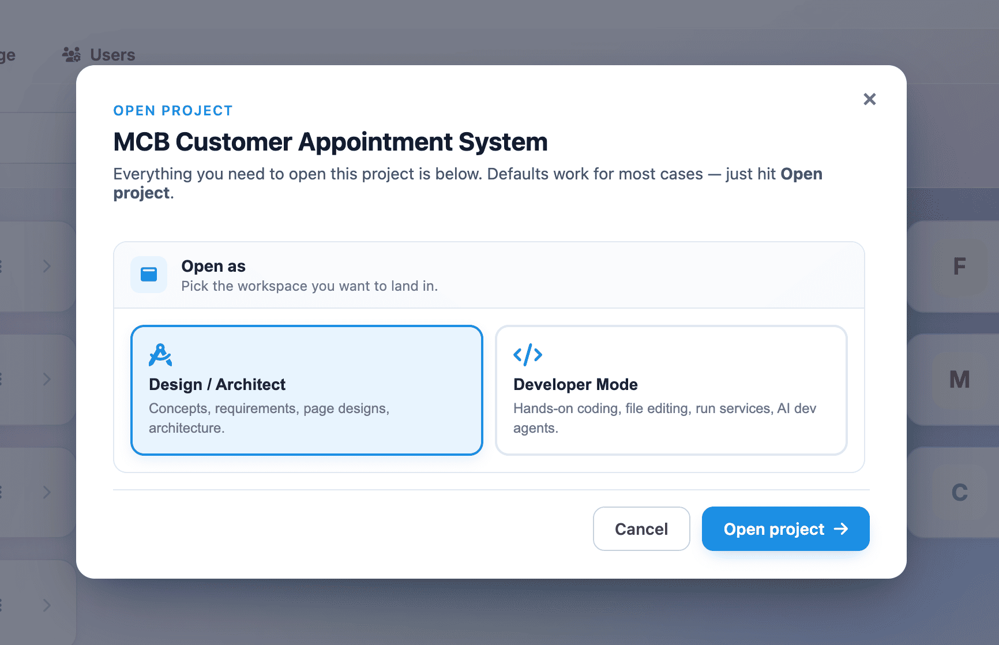

Key Features
The Think4Ever ecosystem delivers a suite of integrated features designed to automate the software development lifecycle. By replacing disconnected design, coding, and testing tools with a single multi-agent engine, the platform allows you to move seamlessly from a high-level concept to a production-ready system.
1. Intelligent Context Ingestion & AI Analysis
Think4Ever eliminates the blank-page problem by instantly translating unstructured human input into structured technical frameworks.
- Natural Language Processing (NLP): When you type a business idea, project requirements, or functional specifications, the AI automatically extracts core structural variables. It programmatically suggests project names, maps layout paths, and provisions your initial workspace folder structures.
- Multi-Format File Ingestion: Skip manual data entry completely by uploading reference materials directly. The system reads and parses project documents (.pdf, .docx, .txt) or pre-existing code archives (.zip) to feed its workspace configuration engine.
- Automated Complexity Benchmarking: The AI continuously evaluates the scope of your text or uploaded files against system complexity baselines. If your project contains complex elements like multi-tenant setups or role-based access controls, the system dynamically recommends and configures an optimized build path.

2. Interactive Requirements Analysis & Blueprinting
Before a single line of code is written, Think4Ever guides you through a collaborative, step-by-step validation loop to eliminate guesswork.
- Round-Based Clarification Questionnaires: The system launches targeted multiple-choice question modules to clear up architectural ambiguities and edge cases (e.g., establishing how users verify their location or which user roles are supported).
- Flexible Input Methods: You can select from pre-made system suggestions, add custom operational variables directly into the questionnaire matrix using + Add new item modules, or check Let AI decide to hand control over to the platform’s optimization defaults.
- Project Concept Mapping: The AI converts your finalized questionnaire answers into an architectural summary, capturing interface screens, control workflows, relational data models, and user permissions.

3. Flexible Project Bootstrapping & Flexible Setup
Think4Ever accommodates any entry point, whether you are starting fresh or migrating an enterprise application.
- Start from Scratch Workflow: Spin up a pristine workspace environment instantly. Combined with our Default Stack Applied (Recommended) option, the platform provisions a highly stable, pre-tested combination of software languages, frameworks, and database structures that run automatically.
- Legacy Code and Dependency Injection: For existing codebases, the Import Existing pipeline lets you sync code repositories by entering a Public GitHub URL or uploading a compressed local snapshot folder.
- Custom Tech Stack Configuration: Users with strict environmental or engineering constraints can bypass default configurations to manually pick and inject specific programming languages, frameworks, and environment setups.
4. Bimodal Workspace Environments
The platform splits your workspace into two dedicated operational modes, keeping high-level system design and execution code organized.

- Design / Architect Mode: A visual layout designed for structural blueprinting. Using a left sidebar navigation menu, you can map out Structure & Ideation rules (Business Flows, Data Objects, Integration Maps) and manage Design & Docs (UI Wireframes, Technical Diagrams) without modifying underlying code.
-
Developer Mode: A hands-on building terminal
featuring a split-screen interface:
- Interactive Chat Panel:Issue natural language prompt commands to instruct the AI assistant to write, modify, or inspect features. Live status badges (like running or waiting) track the AI's agent execution in real time.
- Real-Time Explorer Panel: A digital folder tree that dynamically populates and displays code files, folders, and technical assets as they are constructed by the AI agents.
5. Automated Validation & Quality Assurance
Think4Ever builds stability directly into your application structure, minimizing tech debt and preventing downstream system breaks.
- Impact Simulation Engine: Every time a user requests a change to a business flow or data object, the system automatically simulates how it will impact dependent modules before deploying the change.
- Legacy Code and Dependency Injection: For existing codebases, the Import Existing pipeline lets you sync code repositories by entering a Public GitHub URL or uploading a compressed local snapshot folder.
- Built-In Automated Testing: Every default tech stack environment includes an automated testing framework out of the box, running background code quality checks, security validation, and operational health mapping with every compilation loop.